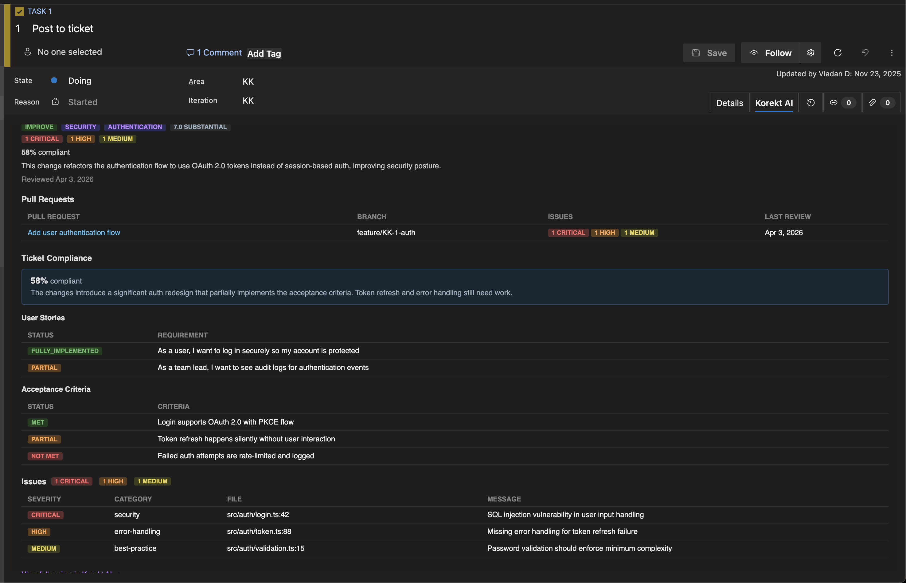

Korekt AI for Azure DevOps
Ticket compliance and AI code review insights in your Azure Boards work items
Overview
Korekt AI for Azure DevOps adds a Korekt AI tab to your Azure Boards work items that checks whether pull requests actually deliver what the ticket asked for. Each user story and acceptance criterion is verified against the code changes — showing what's been met, what's partial, and what's missing. The tab also shows a review summary, severity breakdown, and open issues.
Screenshot
Work item panel — ticket compliance with user story and acceptance criteria tracking, pull requests, and open issues. Click to enlarge.

How It Works
- Developer creates a PR — The branch name or commit messages include a work item ID. Supported formats:
feature/AB#12345-add-login,feature/12345-add-login, or type prefixes likeBug-12345,Story-12345 - Korekt AI reviews the PR — The code changes are analyzed and review results are stored, linked to the work item
- Work item tab shows results — When anyone opens the work item, the Korekt AI tab automatically fetches and displays the latest review findings
Note: This extension displays review results — it does not perform code reviews itself. To generate reviews, you need to connect your repositories by adding a Personal Access Token in the Korekt AI dashboard.
What the Panel Shows
- Ticket compliance — Overall compliance percentage, each user story and acceptance criterion checked against the code with MET / PARTIAL / NOT MET status
- Review summary — Change intent (feature, fix, improvement), complexity score, severity breakdown, and an AI-generated summary of what the code does
- Pull requests — All reviewed PRs linked to the work item with severity counts
- Open issues — Code review findings by severity, category, and file location
If no pull requests have been reviewed for a given work item, the panel displays “No code reviews found for this work item.”
Installation
- Install Korekt AI from the Visual Studio Marketplace
- A free trial account with a $5 review budget is automatically created for your organization
- Go to Project Settings → Korekt AI and click Claim Organization to take ownership of the account
- Connect your repositories by adding a Personal Access Token in the Korekt AI dashboard
Testing
To verify the extension is working after installation:
- Ensure you have connected your repositories and have at least one project configured
- Create a pull request with a work item ID in the branch name (e.g.,
feature/AB#12345-my-featureorfeature/12345-my-feature) - Wait for the code review to complete
- Open the corresponding work item — the Korekt AI tab should appear showing the review results
Admin Settings
The extension adds a Korekt AI page under Project Settings where administrators can:
- View connection status and linked organization
- Claim an auto-provisioned organization
- See activity stats: reviews this month, project count, and last review date
Privacy & Security
The extension only sends the work item ID to the Korekt backend to look up existing review results. No work item content, descriptions, or code is sent from this extension.
All communication uses Azure DevOps extension tokens — cryptographically signed JWTs issued by Azure DevOps. No API keys or shared secrets are stored in the browser.
Your code is never used for model training.
For full details, see our Privacy Policy and Security Policy.
Support
For questions, issues, or feature requests:
Email: support@korekt.ai
Security: security@korekt.ai